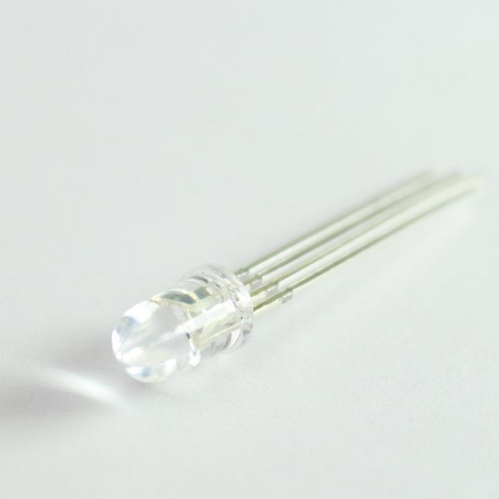
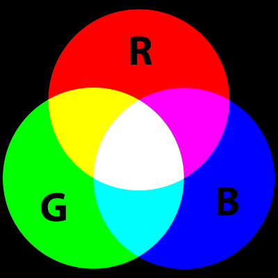
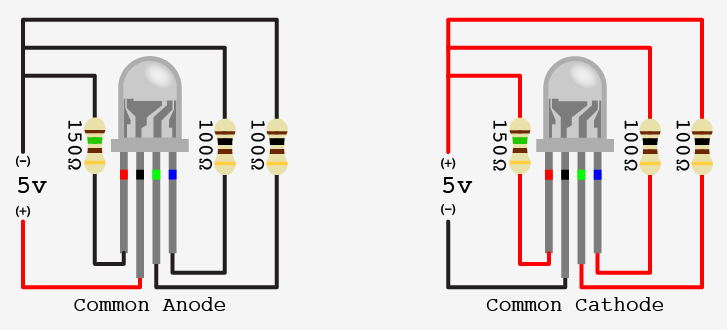

An RGB LED looks like a single LED except it has 4 legs instead of 2. It is actually just 3 LEDs built in one. Obviously RGB is referring to each color LED (RED, GREEN, BLUE).
With light, you can make just about any color with these 3 colors.


When you buy one of these LEDs, it is important to read the product information. With RGB LEDs, they can either have a common cathode, or a common anode. This is important to know how to hook it up to (+) or (-, GND).
The ones that we are using will have a common anode.
Start with the Fading example that fades a single LED.
You will need to repeat the process two more times with two other
independent LEDs.